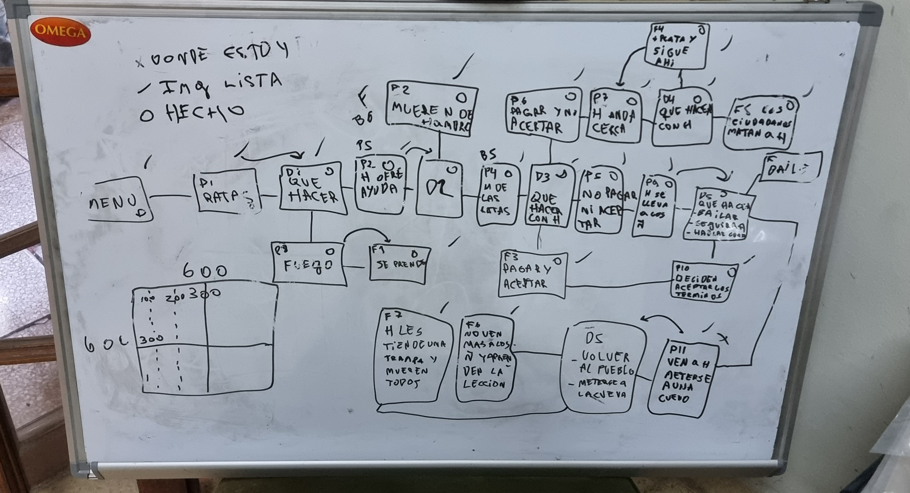
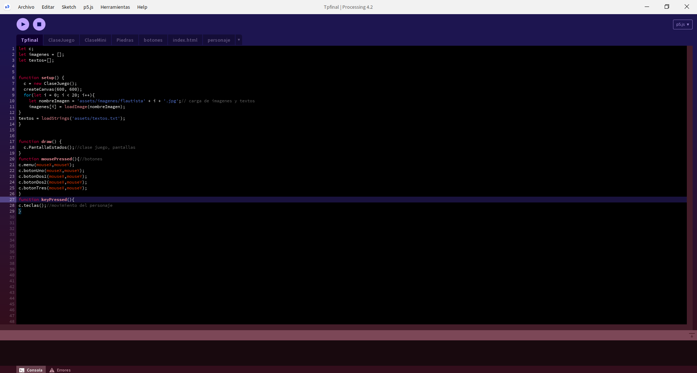

Para la materia de tecnologia multimedial 1, se nos planteo un proyecto dividido en 2 etapas.
Primera etapa: debiamos hacer un video juego que contenga desiciones de historia, donde el camino que tomases seria clave para el final. Tambien debia de tener un minijuego dinamico incluido.
Segunda etapa: En el apartado de tecno web, se nos presentaron herramnientas para el desarrollo web. Debemos de hacer una web con todo lo incorporado en clase. Inicialmente el trabajo era en grupode dos personas, pero eventualmente, mi compañero desaprobo la materia y tuve que desarrollar la mayoria yo solo.
prototipado

Asi fue la planificacion de la historia.
Version final.

Asi quedo el proyecto final.
Proceso
En cuanto al proceso,consto de 3 etapas, en las cual la primera fue en desarrollo del video juego.
En la segunda (Yo personalmente decidi hacer un prototipado en figama para bajar las ideas de una forma mas clara).
Y por ultimo, la tercera fue la creacion de las web.
Juego
El juego, cuenta la famosa historia de el flautista de Hameling,
sin embargo esta tiene diferentes finales en los cuales se presenta desde finales esperados,
hasta algunos muy comicos. Hay 1 solo final “bueno”, para eso deberas de superar el minijuego.
Te doy un consejo, se lo mas rapido posible ¿Podrás llegar a el?